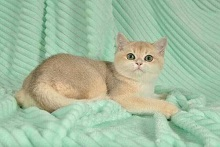
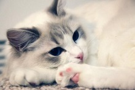

{{title}}
{{title}}
发布时间：2019-09-20 4552次浏览
暹罗猫经常被误解为狗狗，其实的暹罗猫的长得有几分相似狗狗近年来暹罗猫算是已经很普及了，而且数据统计的饲养暹罗猫的大多数是30岁左右的女性朋友比较多这到底是是为什么呢？接下来我们就一起看看吧！

先说说暹罗猫的颜色吧毛颜色较深，暹罗猫的细分种类也很多，乳黄重点色猫，红色斑点色猫，淡紫色重点色猫，蓝色重点色猫，巧克力色重点色猫，以及各色的轻虎斑重点色猫，其中最常见，最为大家熟知的就是海豹重点色猫，这也是其他宠物猫没有特点了！
最早出现于欧洲，比较早熟，典型的毛色是背部和胁腹颜色的深浅与年龄呈正比，年龄越大颜色越深，毛色和它碧蓝色的眼睛形成强烈的对比，背部颜色较深，体毛细短光滑，脑袋呈现楔形，暹罗猫属于重点色品种，意思是身体末端位置腿，耳朵，尾巴等的颜色比其他部位深。

很多女性喜欢暹罗猫的原因有很多在价格上的暹罗猫价格并不比其他宠物猫品种便宜属于贵族猫的一种，看毛色，虽然两个都是像煤矿工人一样的大黑脸，但其实布偶的颜色要浅的多，因为在不熟悉猫的小伙伴眼里，会经常的把海豹重点色的暹罗猫和海豹重点色的布偶猫搞混。暹罗猫一直有“猫中王子”的称号，性格外向话多，喜欢到处蹦蹦跳跳，养过暹罗的主子家里总像是打过仗一样，说实话比一些狗狗还皮，如果你想养只猫又想养一只狗，那就选暹罗吧，这货就是“猫中之狗”啊！如果决定养只暹罗猫，光知道性格可不行，挑选一只心仪的暹罗，关于它品种的知识也是必不可少的，下面一起来了解一下吧。虽然暹罗猫被称为猫中王子的称号但它的活动量很大的喜欢蹦蹦跳跳的，完全继承了狗狗的行为有可能还会的像狗狗一样进行拆家，有的人也叫暹罗猫为猫中之狗的称呼似乎一点儿也不奇怪吧！